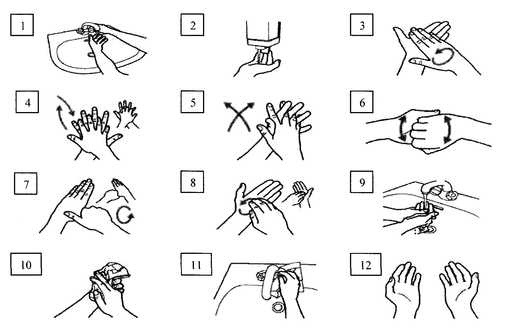

Оснащение: Дозатор с жидким мылом, кран локтевой с регулировкой теплой воды, диспенсер с одноразовыми полотенцами. Необходимые условия: здоровая, неповреждённая кожа рук, ногти, выступающие не более 1мм за подушечки пальцев, без покрытия лаком, отсутствие часов и украшений на руках. Алгоритм:- увлажнить руки водой;
- нанести на ладони необходимое количество мыла;
- потереть одну ладонь о другую;
- правой ладонью растереть мыло по тыльной поверхности левой кисти и наоборот;
- переплести пальцы, растирая ладонь о ладонь;
- соединить пальцы в "замок", тыльной стороной пальцев растирать ладонь другой руки;
- охватить большой палец левой руки правой ладонью и потереть его круговыми движениями, поменять руки;
- круговыми движениями в направлении вперед и назад сомкнутыми пальцами правой руки потереть левую ладонь, поменять руки;
- тщательно смыть мыло под проточной водопроводной водой;
- тщательно промокнуть одноразовым полотенцем (салфеткой);
- использовать полотенце для закрытия крана;
- руки готовы к работе.